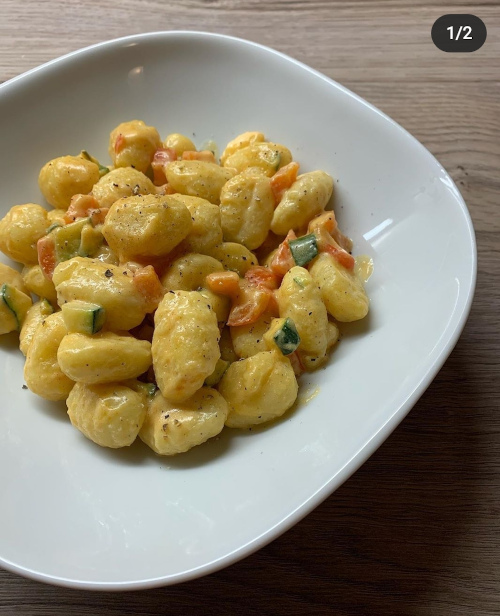

Sahne-Gnocchi
Gnocchi mit Paprika und Zucchini in Sahne-Sauce

Zutaten
- 800g Gnocchi
- 2-3 Paprika
- 2-3 Zucchini
- 250g Hafer/Sojasahne
- 200ml Sojamilch
Zubereitung:
- Gnocchi nach Packungsanweisung kochen
- Gemüse schneiden und anbraten
- Gnocchi hinzufügen, ebenfalls kurz mitbraten
- Mit Sahne und Milch ablöschen
- Nach belieben würzen (Salz, Pfeffer, Paprikapulver etc.)
zurück